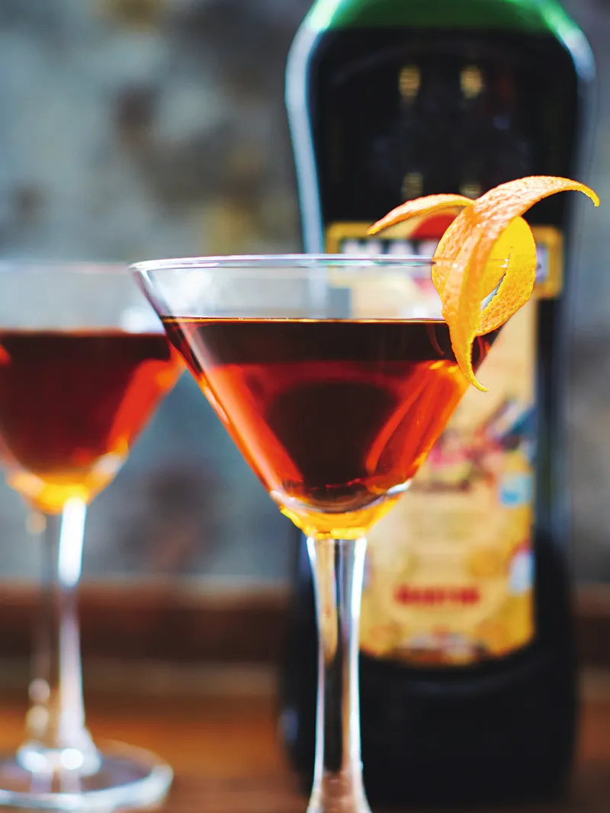

This is an absolute classic. I make a big batch of this before a party, then pour into chilled martini glasses and garnish as the guests arrive. You don't need to make many though!
As the main cocktail mixture here is entirely made up of booze (we like that), it means this is the perfect cocktail recipe to batch up, either to get ahead for a party or to give as a gift to some lucky friends or family. If you’re serving up multiple drinks at once, just remember that ice melts quickly and it’s still advisable to stir it up in smaller batches, so you don’t dilute the mix too much.